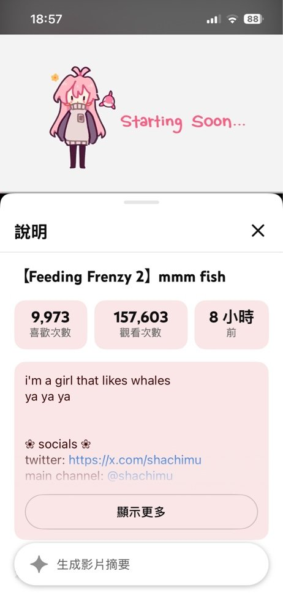

2026-10-11
目前已完成 本機網頁版與 LINE 個人使用 MVP，手機貼 YouTube 網址後，可取得中文摘要與外語學習卡。
- 字幕功能：支援常見 YouTube 網址、中文優先與其他語言回退、全文顯示及文字下載。
- Gemini 處理：中文主題摘要、學習卡、原句核對與影片時間跳轉；網頁支援列印／另存 PDF。
- LINE 串接：已完成 LINE 串接，可手機使用。
- 資料保護：YT的一些規範比較麻煩，所以預計測試版收尾後，使用付費API來確保AI廠商必須遵守不使用資料作訓練的規則。
下一階段尚未實作的是：長影片分段分析、依內容關聯跨段統整成中文導覽，再選主題深入翻譯與學習，並加入字幕暫存、進度保存及額度限制後續作。Google Cloud 部署也尚未進行，雲端跟YT要原文資料會被擋，就算是GCP也不行，還得思考怎麼辦…
2026-10-13
炸，YT自己搞一套超隱密的摘要功能，而且問AI還是在2023年-2024年就已經存在，我做的東東只剩Line bot跟外語學習小卡的差異了，忽然感覺可以結案了wwww

2026-10-13
https://youtu.be/LwOVtWBchvQ?si=n2MbF6P1gX1o-fzs
剛好今天看的文章拿來測試這個小工具，不比較沒有傷害wwww
這是YT內建Gemini的摘要功能結果
在這段訪談中，曾預測 2008 年金融危機的基金經理人 Steve Eisman 對當前的 AI 熱潮提出了觀點。他強調了以下幾個核心風險與現狀：
- 集中度風險 (Concentration Risk)： Eisman 指出 Nvidia 與大型雲端服務供應商（如微軟、Google、Meta 等）的收入高度依賴 OpenAI 與 Anthropic。若這兩家 AI 公司營運出現問題，整個供應鏈將面臨連鎖反應 (00:54 - 06:30)。
- 缺乏護城河 (Lack of Moats)： 他認為 AI 模型領域目前競爭激烈且沒有傳統意義上的「護城河」，企業與開發者容易隨時轉換模型 (09:05 - 11:38)。
- 末日論的質疑： Eisman 認為 AI 公司頻繁提及「AI 末日風險」是一種策略，目的是希望政府透過監管來建立法律門檻，進而阻擋競爭對手，創造出人為的護城河 (11:38 - 14:15)。
- 能源瓶頸： 對於 AI 基礎設施，他認為電力供應是美國面臨的重大挑戰。像 GE Vernova 這樣的能源公司正因數據中心對電力的巨大需求而受益，且訂單滿載 (21:01 - 26:30)。
最後，針對這是否為 1999 年網路泡沫重演的提問，Eisman 表示目前下定論還太早 (27:03 - 27:31)。
這是小工具MVP的功能結果
發現一個很麻煩的問題，就是文字給Gemini處理時，很常會出現HTTP503的錯誤，就AI不理人，所以大量字幕的影片需要多次分批給Gemini處理時，幾乎必失敗。然後學習卡有Bug，有空再來處理(也可能不管了)，但HTTP503這個問題，就讓我有點不想接續這個功能開發，畢竟我也沒法控Gemini的心情..XD
主題重點
AI 產業鏈的集中風險
訪談指出，整條 AI 產業鏈從輝達、各大雲端業者（如微軟、亞馬遜、Google、Oracle）到基礎設施，其龐大營收與未交付訂單（RPO）有極高比例集中在 Anthropic 與 OpenAI 兩家公司上。由於這兩家公司目前仍處於鉅額虧損與燃燒資金的狀態，若其未來成長不如預期或資金斷鏈，將對整體市場造成巨大的連鎖衝擊。
0:56 https://www.youtube.com/watch?v=LwOVtWBchvQ&t=56s
模型供應商缺乏護城河與市場轉變
AI 模型供應商面臨沒有護城河的困境，客戶缺乏忠誠度且隨時會轉向效能更好或更便宜的替代方案（如中國的開放權重模型）。過去盛行的「tokenmaxxing」（無節制消耗 token）現象已隨成本壓力及漲價而降溫，企業對成本變得敏感，不再盲目砸大錢。
9:25 https://www.youtube.com/watch?v=LwOVtWBchvQ&t=565s
AI 末日論與法規監管的質疑
講者認為，部分 AI 企業大肆宣揚「AI 將毀滅世界」或呼籲放慢發展速度，其實是一種製造恐慌的策略。其真正目的是希望藉由政府法規與管制來築起法律的高牆，排除如中國開放權重模型等競爭對手，藉此創造兩家獨大並鞏固自身地位。
12:00 https://www.youtube.com/watch?v=LwOVtWBchvQ&t=720s
電力與基礎設施的挑戰
除了晶片與資金，美國面臨嚴重的電力短缺問題。由於資料中心耗電量巨大，加上電網建設緩慢，帶動了發電設備與燃氣渦輪機製造商（如 GE Vernova）的需求暴增，訂單甚至已經排到 2035 年左右。
20:54 https://www.youtube.com/watch?v=LwOVtWBchvQ&t=1254s